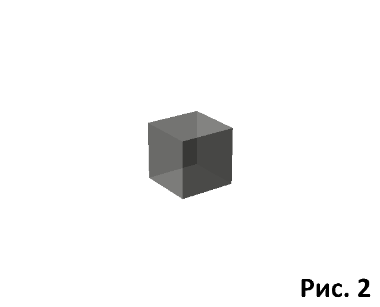
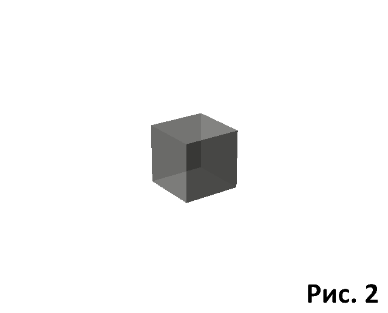

|
В начале поясню, что вся поледующая гипотеза построена методом моделирования. Это означает, что все описываемые процессы моделировались искуственно, исходя из реальности. Затем делались динамические рисунки-анимации, анализировались, и на этой основе форировалось ядро гипотезы. По этому о её достоверности можно судить только по сопадениям конечных результатов с реальностью, и так же по возможностям дальнейшего развития сценария. Внимание, в виду того, что работы над темой ещё ведуться, прорабатываются детали, в сайте возможны изменения. Ввиду того, что гипотеза довольно обширна, и в её составе есть места вполне доказуемые, предлагаю в начале рассмотреть общую схему всей гипотезы в целом, а затем по разделам рассматривать каждое явление более детально. Предупреждаю: и в общей схеме, и в детализациях порой будут озвучиваться очень, на первый взгляд, странные мысли, никак не укладывающиеся в общепринятую действительность. Не следует торопиться с выводами, не дочитав до конца. Начнём со времени , самого спорного вопроса на сегодня. Его постоянно пытаются связать с пространственными измерениями. Но ведь это не совсем так. Сейчас, как маленькое отступление, скажу, что далее в тексте под словом "пространство" будет подразумеваться всё, наблюдаемое нами вокруг себя. Это и материалльные объекты, и вакуум. Мы испокон веков представляем пространство трёхмерным. То есть атрибуты пространства - это его измерения: длина, ширина и высота. Время же - атрибут процесса, а не пространства. Поэтому его следует рассматривать соответственно статусу. Из этого вытекает вывод: наша наблюдаемая Вселенная - это процесс, происходящий в пространстве. Это не требует доказательств, потому что мы знаем, что Вселенная родилась после явления "Большой взрыв", она постоянно расширяется, в ней происходят более мелкие процессы, такие как рождение и смерть астрономических объектов, наша бренная жизнь и многое другое. Это всё - единый большой процесс. И происходит он в пространстве и во времени. В двух этаких ипостасях. Отражается время в пространстве не стандартно, как расстояние, а как бы косвенно. Будто бы его не видно. Вот с этого места начинается гипотеза. Под всем этим большим процессом скрывается волна. Обыкновенная волна, аналогичная той, что излучается нашим мобильником. Лишь с той разницей, что она была в нашем Мире первой. Волна - это процесс, происходящий во времени и пространстве, то есть он подходит для наших целей - создать с помощью неё Вселенную. Только сразу сыплются вопросы. Но ничего, мы же знаем, что любое открытие в науке создаёт больше вопросов, чем дало ответов. Развёрнутые ответы будут в специализированных разделах, здесь мы создадим общую схему, охватывающую процесс в целом, которая поможет нам понять суть. Первый и самый главный вопрос - это "откуда же возмётся материя, да ещё в таких количествах?". Но у физики уже есть ответ на него, только мы запутали его под понятие "корпускулярно-волновой дуализм". Мы ведь прекрасно знаем, что элекромагнитные волны производят (или рождают) фотоны, существующие только при наличии волны. Фотон вполне материальная частица, а факт его рождения электромагнитной волной - чем не прототип рождения остальной материи. Процесс рождения элементарных частиц мы рассмотрим в отдельной главе, и заодно увидим, что такое "постоянная тонкой структуры". А пока просто примем за реальность то, что некая волна по мере своего распостранения производит материальные частицы, протон и электрон. Почему одна волна и две частицы - тоже будет ответ. А вот чтобы составить любой известный нам атом, этих двух частиц достаточно. Нейтрон вполне реален как их комбинация, а его распад в свободном состоянии указавает на происходящие в нём слабые ядерные взаимодействия. Из этого мы видим, что волна - зто процесс, рождающий материю во времени и пространстве. То есть то, что нам нужно. Из простейших понятий создаётся реальность. А ведь философия утверждает, что Мироздание развивается от простого к сложному. Мы это и наблюдаем. Любая волна в пространстве развивается как сферическая, то есть из центра во все стороны. Вот и привяжем "Большой взрыв" к центру возникновения нашей волны. Назовём её "Волной времени", ведь с её появлением начинается отсчёт времени жизни Вселенной. Она развивается как надуваемый шарик - постоянно увеличивающаяся в диаметре сфера (Рис. 2). Волна развивается в шестимерном пространстве (об этом в главе "Пространство"). Из шести измерений три полностью используются волной, а ещё три частично. В итоге наблюдается ситуация, когда волна развивается внутри трёх взаимно перпендикулярных плоскостей, а фактически внутри куба (Рис. 2). Каждому из существующих трёх измерений соотвествует плоскость, и каждой плоскости сопутствует одно скрытое измерение времени. Ведь волна скрыта под сторонами куба, или, по другому говоря, внутри трёхмерного мира происходит скрытый процесс развития волны. В результате воздействия волны стороны куба искажаются. Искажения мы видим как материю, остальное пространство - это окружающий её вакуум. В каждый новый момент времени сфера увеличивается. Можно представить, что в каждый новый момент времени рождается новая, чуть-чуть большая сфера. Она всегда ограничена шестью плоскостями, то есть кубом. В каждый новый момент времени на кубе, на шести сторонах появляются новые искажения,новые частицы материи. Куб практически постоянно искажён до степени сферы. Примерно так обстоит дело в целом, с общей "Волной времени". Но как любая сферическая волна, она состоит из безчисленного числа лучей, разбегающихся во все стороны. Кадый луч - это самостоятельная волна, и на каждом рождается самостоятельная пара протон-электрон. Каждая пара ограничивается своим кубом, как и полная волна. Теперь примем во внимание, что каждый из лучей движется по прямолинейной траектории. В таком случае он с каждым шагом будет появлятся на новой сфере общей волны в том же месте, что и на прошлом шагу. И строить здесь новую пару частиц. Если из них состоят атомы и другие тела, то комбинация лучей, двигаясь прямолинейно каждый в отдельности, будут в каждый раз рождать их в точности на том же месте, что и в предыдущем шагу (Рис. 3). В итоге мы получили схему, в которой волна на каждом шагу, то есть через каждый определённый промежуток времени, строит сферическую плоскость. И на каждой следующей плоскости повторяется прошлая конфигурация рождаемых частиц. Ведь утверждают астрофизики, что мы видим мир на плоскости. Вот она, эта плоскость. Эта плоскость сразу в трёх экземплярах, тоесть на плоскости развивается объёмная волна. Как в кино, каждый кадр накладывается на предыдущий, но в некоторых местах появляются изменения, и в итоге мы видим движущуюся картину. И в самом деле, некоторые из лучей "Волны времени" могут иногда натыкаться на препяствия, изменяющие их направление движения. Тогда они на следующих плоскостях будут повляться каждый раз в новом месте, равноудалённом от предыдущего. И расстояние удаления будет зависеть от угла преломления луча относительно прежней траектории. Это движение по инерции. Нигде прежде не встречал никакой попытки как-либо объяснить механизм этого явления. Движение по инерции всегда принималось как аксиома. Наша общая схема вносит некоторые изменения в представления о времени жизни элементаных частиц. Если в современной физике протон, нейтрон и электрон считаются вечно живущими, то согласно этой гипотезе их время жизни очень мало, как и у всех известных современности элементарных частиц. А вечно живущими они становятся за счёт постоянной реинкарнации. В каждом очередном цикле волны рождается новый слой, а на нём новые искажения, новые протон-электронные пары. Из этой схемы вполне понятно, как из волны можно построить целый мир. Остаётся добавить взаимодействия, и - готово. Все взаимодействия, то есть: гравитация, электромагнитные силы, ядерные сильные и слабые взаимодействия, происходят чисто взаимодействием волн. Всё это будет описано в следующих разделах. Данная гипотеза прекрасно вписывается как в классическую Ньютонову физику, так и в теорию относительности. Об этом тоже будет отдельно расписано. |
 

{kind=link}

| Назад. Оглавление |
Следующая страница. Пространство. |